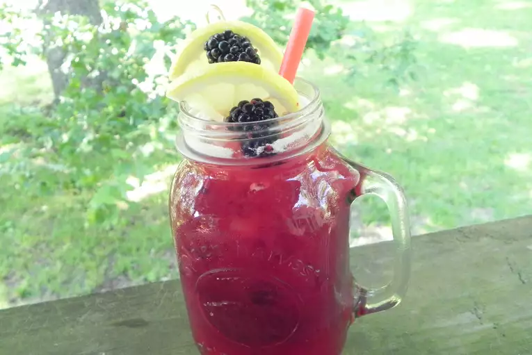

Homemade Blackberry Lemonade

Homemade Blackberry Lemonade
This homemade lemonade is easy to make and gets a flavor boost from blackberries. The end result is light and refreshing which is perfect for those hot summer days.
Ingredients
- ¾ cup white sugar
- 4½ cups water, divided
- 1 cup blackberries
- 2 tablespoons white sugar
- 1 cup freshly squeezed lemon juice
- ice cubes
Directions
- Heat 3/4 cup sugar and 1/2 cup water in a small saucepan over medium heat. Cook and stir until sugar has dissolved, about 2 minutes. Let cool.
- Place blackberries and remaining 2 tablespoons of sugar in a blender. Blend until smooth.
- Combine simple syrup, blended blackberries, remaining 4 cups of water, and lemon juice. Place a fine-mesh sieve over a pitcher and pour lemonade into the pitcher. Discard solids. Serve over ice.
Nutrition Facts
Per Serving: 200 calories; protein 0.7g; carbohydrates 52.5g; fat 0.2g; sodium 15.5mg.
Home page
Previous page
Next page